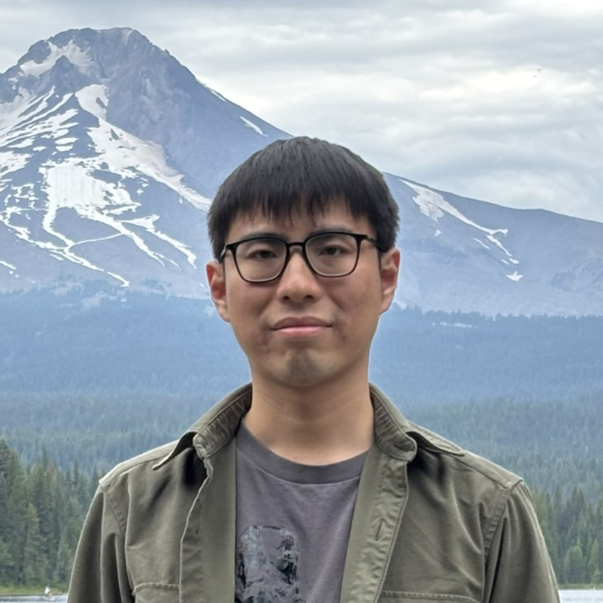
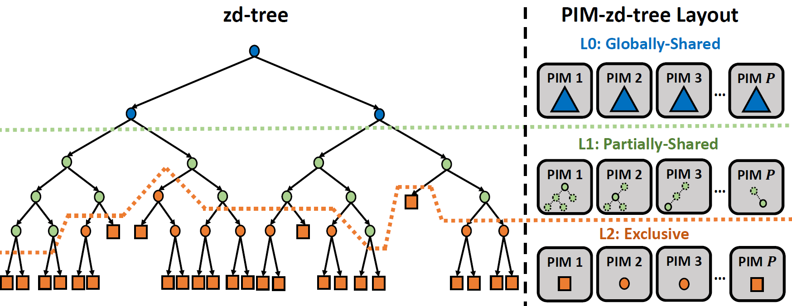
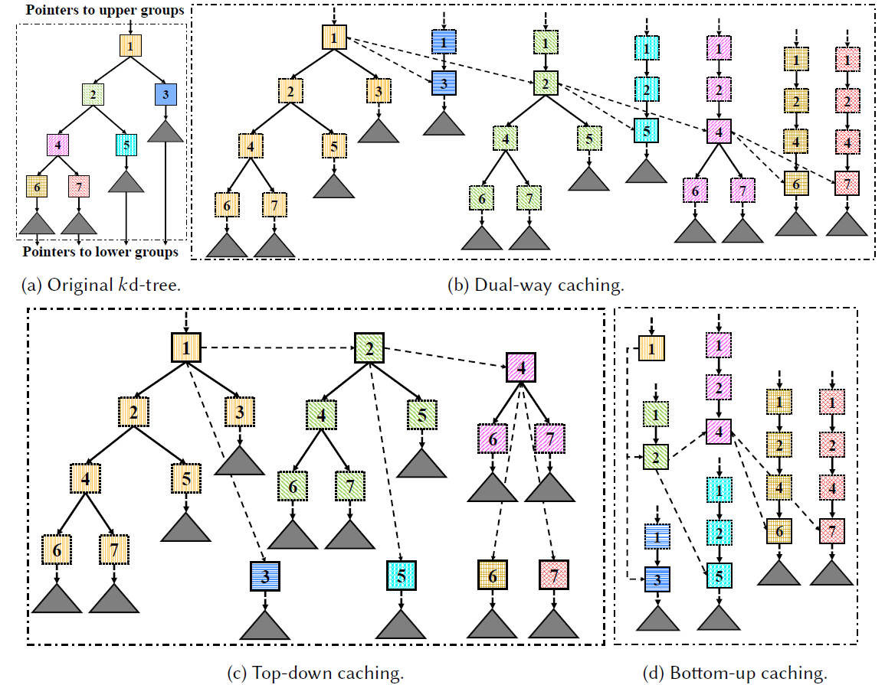
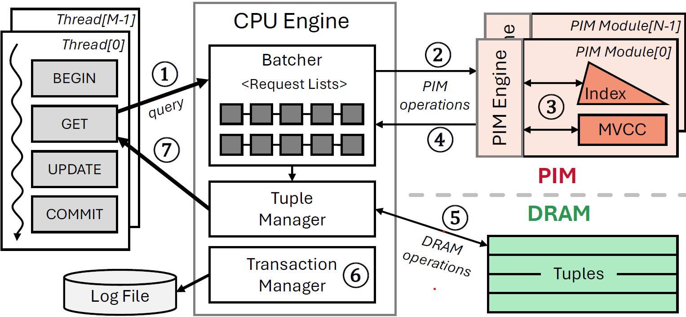
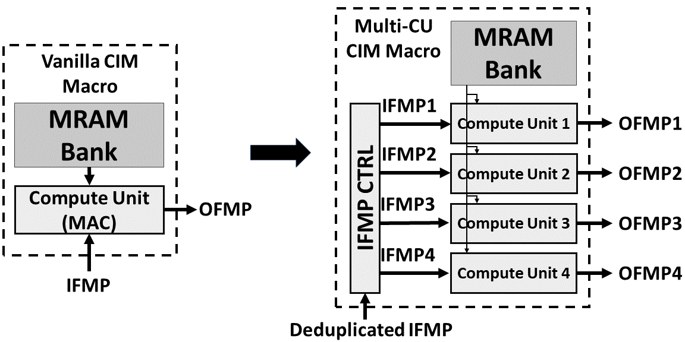
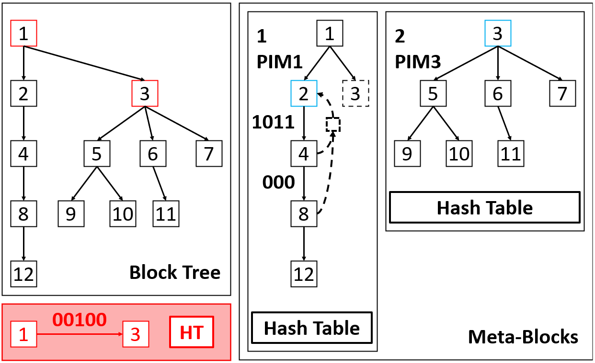
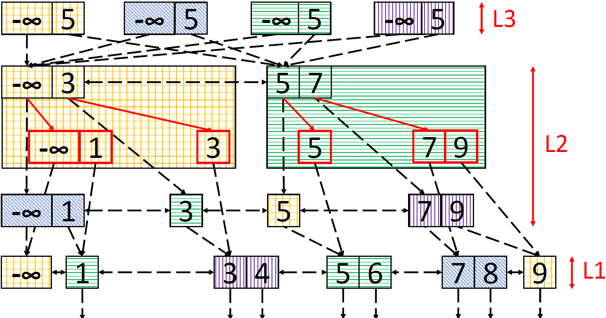

Ph.D. Student in Electrical and Computer Engineering
Parallel Data Lab & CMU Parlay Lab
yiweiz3 [at] andrew [dot] cmu [dot] edu
I am a final-year Ph.D. student at CMU, advised by Prof. Phillip B. Gibbons. Prior to that, I received my Bachelor's degree from Tsinghua University with highest honor in 2021, where I was advised by Prof. Dan Pei and Prof. Yongpan Liu. I also worked as a Research Scientist Intern in Meta in 2023 and 2025, and with Prof. Julian Shun in MIT CSAIL during 2020-2021.
I design faster and more efficient computer systems and architecture. My research focuses on cross-stack co-design for emerging hardware systems---recently centered on Processing-in-Memory---spanning three levels: (i) algorithms and data structures, (ii) systems and architectures, and (iii) hardware and circuits. My work aims to develop general and foundational techniques for designing future hardware systems that are both theoretically grounded and practically efficient.
2021 – Present
Advisor: Prof. Phillip B. Gibbons
* denotes equal contribution


Optimal Batch-Dynamic kd-trees for Processing-In-Memory with Applications
SPAA 37th ACM Symposium on Parallelism in Algorithms and Architectures, 2025



PIM-trie: A Skew-Resistant Trie for Processing-in-Memory
SPAA 35th ACM Symposium on Parallelism in Algorithms and Architectures, 2023

PIM-tree: A Skew-resistant Index for Processing-in-Memory
VLDB Proceedings of the VLDB Endowment, Vol.16, No.4, 2023